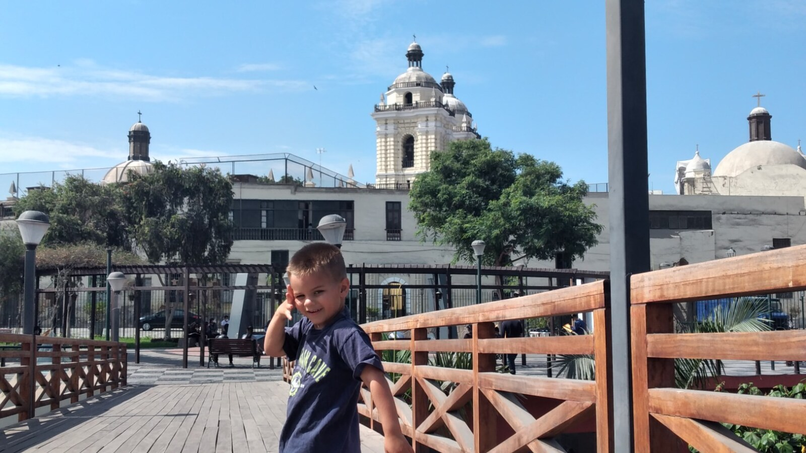

What Makes a Home Safe for an Autistic Adult?
A safe home does more than prevent emergencies. It makes protection part of ordinary life without turning the person being protected into a prisoner.

What makes a home safe for an autistic adult?
The easy answer is a list: locks, alarms, fences, cameras, nonslip floors, medication storage, emergency plans, and trained caregivers.
All of those may matter. None of them, by itself, creates safety.
A door alarm can warn staff that a resident at risk of elopement is leaving. It can also become part of a system in which an adult is never permitted to go outside. A camera can help clarify an incident in a common area. It can also invade privacy. A locked cabinet can prevent a poisoning. A locked kitchen can unnecessarily restrict every resident because one person needs protection around food or cleaning supplies.
The real question is not whether a home has enough safety equipment. It is whether the home understands each resident well enough to protect that person from their actual risks while preserving as much freedom, privacy, comfort, and ordinary adult life as possible.
For Casa de SAM, that principle can be stated simply:
Safety without punishment. Freedom with quiet support.
Safety begins with knowing the individual
Autistic adults are not one safety category.
One resident may understand traffic but be unable to call for help after becoming lost. Another may leave quickly when distressed and move toward water. One may have seizures at night. Another may have swallowing difficulties, poor balance, little awareness of heat, or a tendency to ingest nonfood items. Someone else may be physically capable and safety-aware but vulnerable to financial exploitation or manipulation by strangers.
The same feature can therefore protect one person and unnecessarily restrict another.
A meaningful safety plan should begin with questions such as:
- What has actually happened before?
- What situations make the person more vulnerable?
- How does the person communicate pain, fear, illness, or a desire to leave?
- Which risks are frequent, and which are possible but unlikely?
- What can the resident manage independently?
- What is the least restrictive support that would address the real danger?
- How will the plan change as the resident ages or gains or loses abilities?
Safety planning should be individualized, documented, taught to caregivers, and reviewed after incidents and ordinary changes. It should not be a generic checklist completed once and forgotten.
Elopement protection must include more than a locked door
Wandering, sometimes called elopement, means leaving a safe area or responsible caregiver. The Centers for Disease Control and Prevention identifies it as an important safety issue for some people with disabilities. Research has found that wandering is relatively common among autistic children and can expose them to traffic, drowning, falls, weather, and other dangers. Adult-specific research remains much thinner, but many families know that the risk does not automatically disappear on a person’s eighteenth birthday.
For some residents, exterior doors and windows may need discreet alarms. A home may need enclosed outdoor space, a protected route between buildings, staff who respond immediately, identifying information kept current, and a practiced search plan. Nearby police, firefighters, transportation workers, and neighbors may need to know how to recognize and approach a resident safely.
But prevention should not consist only of making escape impossible.
Caregivers should also ask why the person leaves. Are they seeking water, movement, food, a favorite place, or a familiar route? Are they escaping noise, conflict, demands, pain, or an overwhelming room? Do they understand the boundary? Can they ask to go outside in a way others recognize?
Sometimes the environment can meet the need before it becomes an emergency. A resident who constantly seeks outdoor movement may need frequent access to a secure path, not only a better lock. A person who bolts from noise may need a reliable quiet space and permission to use it. A resident drawn to water may need especially careful supervision near ponds and pools while still having safe opportunities to enjoy water.
A secure perimeter may prevent tragedy. A humane plan also tries to understand the destination.
The home should make safe choices easier
Good design does not depend on a resident remembering every rule or a caregiver catching every mistake.
It makes the safer action the easier, more natural action.
That may include:
- continuous railings and barriers where a fall would be dangerous;
- nonslip flooring and bathrooms designed to reduce falls;
- quiet door and window alerts rather than harsh alarms throughout the house;
- clear sightlines in shared areas without eliminating private spaces;
- durable fixtures that do not look punitive or clinical;
- safe storage for medication, chemicals, sharp objects, and individual hazards;
- temperature controls that reduce burn risk;
- lighting that supports navigation without creating sensory distress;
- protected outdoor areas where residents can move freely;
- visual cues that help a resident recognize rooms, exits, routines, or boundaries;
- space for mobility equipment, seizure equipment, oxygen, or future medical needs;
- more than one safe route out during a fire or other emergency.
The photograph accompanying this article was taken in Lima, Peru. Sam is standing on a pedestrian walkway high above railroad tracks. The railing is substantial because the consequence of a fall would be catastrophic.
Yet the space does not feel like a cage. The protection is integrated into an attractive public walkway. Sam can enjoy the height, the city, the wooden path, and the freedom to move while the structure quietly limits the danger.
That is the design instinct Casa de SAM wants to preserve: identify the serious risk, build protection into the environment, and then let the person live.
Technology should support caregivers, not replace them
Technology can add important layers of protection. Door and window sensors, seizure monitors, call systems, medication records, location devices, smoke detection, and other tools may help staff respond faster.
But technology fails. Batteries die. Internet connections drop. Devices are removed. Alerts are missed. A system can produce so many notifications that staff stop recognizing the urgent ones.
No device can replace a caregiver who knows that a resident’s unusual silence may mean pain, that a particular movement precedes a seizure, or that a person who normally loves dinner has suddenly stopped eating.
Technology should give attentive people better information. It should not create the illusion that a vulnerable resident is safe because a dashboard is green.
Medical safety belongs inside ordinary home life
Some autistic adults also live with epilepsy, mobility limitations, gastrointestinal problems, diabetes, allergies, swallowing difficulties, sleep disorders, mental-health conditions, or other medical needs. A safe home must be able to follow medication schedules, recognize changes, communicate with clinicians, and respond to emergencies.
That does not mean the home should look or operate like a hospital.
Medication can be stored securely without placing a medication cart at the center of household life. Medical equipment can be accessible without defining the resident’s room. Staff can document carefully while speaking to residents as people rather than cases.
Casa de SAM’s developing vision includes planning for changing bodies from the beginning. Bedrooms and bathrooms should be able to accommodate increased support. Medical lines and equipment needs should be considered before walls are finished. Emergency access should be possible without making every day feel like an emergency.
A lifelong home should not become unsuitable the moment a resident’s care becomes harder.
Caregiver continuity is a safety feature
A resident who cannot describe symptoms, report mistreatment, or explain what happened depends heavily on other people noticing.
That makes continuity more than a comfort. It is protection.
A familiar caregiver may recognize a different vocalization, a change in gait, an altered sleep pattern, new food refusal, or a small injury that an unfamiliar person would overlook. Long-term knowledge can help distinguish distress from preference, a familiar behavior from a new medical concern, and an ordinary bad day from the beginning of a crisis.
Continuity cannot mean dependence on one heroic caregiver. People become ill, need rest, leave jobs, and eventually retire. Information must be documented and shared. Backup staff must be trained. Families should be heard. New caregivers need supported time to learn the person rather than being handed a folder and a shift.
Casa de SAM currently envisions a deeply invested full-time caregiver connected to each home, supported by staffing, oversight, training, and relief. The goal is for residents to be known without making their safety depend on a single irreplaceable person.
Protection from abuse requires enforceable boundaries
Physical design cannot protect residents from every danger. Some of the most serious risks come through relationships.
Adults with significant communication and intellectual disabilities may be unable to report abuse clearly, may be disbelieved, or may show distress in ways others misinterpret. A warm, family-style atmosphere must never become an excuse for weak screening, casual access, poor documentation, or unclear authority.
Casa de SAM’s current vision includes firm boundaries:
- Unapproved volunteers should never be alone with residents.
- Volunteers should not provide intimate care unless formally qualified and assigned.
- Resident bedrooms, bathrooms, care plans, and medical information remain private.
- Visitors should sign in and follow household boundaries.
- No one should photograph, transport, discipline, restrain, or remove a resident without appropriate authority.
- Concerns and incidents should be documented and reviewed by someone empowered to act.
A background check is one layer, not proof that a person is safe forever. Training, supervision, clear reporting channels, outside oversight, and a culture willing to respond to small boundary violations all matter.
A boundary that is not enforced is only a suggestion.
Safety must include dignity, privacy, and freedom
There is a real danger in talking about vulnerable adults only through everything that might go wrong.
A home can prevent wandering, falls, medication errors, and unauthorized visitors while still causing harm through isolation, unnecessary restraint, constant surveillance, lack of privacy, or rules that erase adult life.
The Administration for Community Living describes person-centered planning as a process that considers a person’s strengths, preferences, needs, and desired outcomes while addressing health and safety without unnecessarily restricting freedom. U.S. home- and community-based services standards also emphasize privacy, dignity, respect, freedom from coercion and restraint, access to food and visitors, and control over ordinary life.
Casa de SAM will operate in Paraguay and will need to follow Paraguayan law and develop its own professional standards. These principles are still useful: safety is not merely the absence of injury. It includes protection from unnecessary control.
Residents should be able to close a bedroom door, keep personal possessions, decline optional activities, rest, enjoy familiar food, welcome approved visitors, and participate in community life to the extent that is safe for them.
Restrictions may sometimes be necessary. They should be tied to an identifiable individual risk, documented, reviewed, and reduced when possible—not imposed on the entire household because uniform rules are easier.
A safe home is prepared for ordinary failures
Safety plans often assume that every layer will work. Real homes must assume that sometimes one will not.
What happens when the electricity fails? When a caregiver calls out sick? When a gate is left open during maintenance? When a resident removes an identification bracelet? When a storm blocks the road? When medication is delayed, a vehicle breaks down, or the person who knows the resident best is unavailable?
Good safety comes from overlapping layers:
- a thoughtfully designed environment;
- trained and attentive people;
- clear individual plans;
- backup staffing and communication;
- rehearsed emergency procedures;
- reliable documentation;
- maintenance and testing;
- relationships with families, clinicians, emergency services, and the surrounding community;
- honest review after near misses and incidents.
The goal is not a home where nothing can ever go wrong. No honest organization can promise that. The goal is a home that anticipates foreseeable risks, responds quickly, learns when systems fail, and does not hide mistakes to protect its reputation.
What you can do this week
You do not need architectural plans or a chosen residential provider to begin documenting what safety means for your family member.
Write down three real incidents or near misses
Describe what happened, what came immediately before it, what prevented greater harm, and what support would have made the situation safer.
Walk through one ordinary day
Notice risks connected to doors, windows, water, stairs, traffic, food, medication, bathing, sleep, visitors, transportation, and communication. Include what the person handles safely, not only what they cannot do.
Create a one-page emergency profile
Record a current photo, communication method, medical concerns, likely destinations, calming approaches, emergency contacts, and anything a first responder should avoid.
Test one existing safeguard
Check whether an alarm still works, emergency information is current, medication is stored correctly, or another caregiver knows what to do. A plan that has never been tested may not work as expected.
Name one unnecessary restriction
Ask whether a current rule addresses an individual danger or exists mainly because it is convenient. Consider whether a quieter or more individualized support could replace it.
Long-term questions to consider
- Which risks are most serious for this individual, and what evidence supports that judgment?
- How does the person communicate pain, fear, distress, or a desire to leave?
- What environmental protections can be built in without making the home feel clinical?
- Which restrictions are truly necessary, and who reviews them?
- How will safety plans change as health, mobility, judgment, or communication changes?
- What happens during a power, internet, staffing, transportation, or equipment failure?
- Who notices subtle medical or behavioral changes?
- How are new caregivers taught the details experienced caregivers know?
- How can the resident safely access outdoors, water, movement, food, visitors, faith, and community life?
- What protections exist against abuse, neglect, exploitation, and unauthorized access?
- How can a resident or family report a concern to someone outside the immediate household?
- What records are kept after incidents, and how does the organization demonstrate that it learned?
- Can the home continue supporting the resident if medical or mobility needs increase?
Casa de SAM's position: protection should expand life
Casa de SAM is not yet an operating nonprofit or residential provider. Its final buildings, staffing model, safety systems, and policies will require professional, legal, clinical, architectural, fire-safety, and regulatory review in Paraguay.
But the principle can be established now.
Casa de SAM will be designed for adults who may need substantial daily protection. It will not pretend that every risk can be solved through independence training, good intentions, or a resident’s right to make choices. Some residents may not understand a danger, communicate consent reliably, or recover safely from a mistake.
That reality calls for serious care.
It does not call for making every resident live under every possible restriction.
The safest home is not necessarily the one with the most locks, alarms, rules, and surveillance. It is the one that understands the person, prepares for the risks that are actually present, supports caregivers well, responds honestly when something goes wrong, and protects enough freedom for the resident to have a life worth safeguarding.
Protect the residents. Protect the promise. Protect the home.
Sources and further reading
- Centers for Disease Control and Prevention: Wandering (Elopement)
- Pediatrics: Occurrence and Family Impact of Elopement in Children With Autism Spectrum Disorders
- PLOS ONE: Reported Wandering Behavior Among Children With Autism Spectrum Disorder and/or Intellectual Disability
- Journal of Autism and Developmental Disorders: Elopement Patterns and Caregiver Strategies
- Administration for Community Living: Home- and Community-Based Services Settings Rule
- Administration for Community Living: Person-Centered Planning and Self-Direction
About Casa de SAM
Casa de SAM is a developing vision for a lifelong residential community in Paraguay for adults with autism and other developmental disabilities who need substantial daily support. The project is being built around one central promise: residents should be safe, known, respected, and able to belong without having to earn their place through productivity or independence.
Casa de SAM is not yet an operating nonprofit or residential provider. We are currently researching, documenting the vision, and looking for people who may eventually help build it responsibly.
This article provides general educational information and describes Casa de SAM's developing philosophy. It is not individualized medical, legal, architectural, fire-safety, or residential-placement advice. Safety plans should be developed for the individual with qualified local professionals.